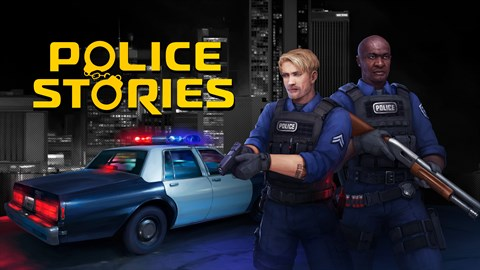
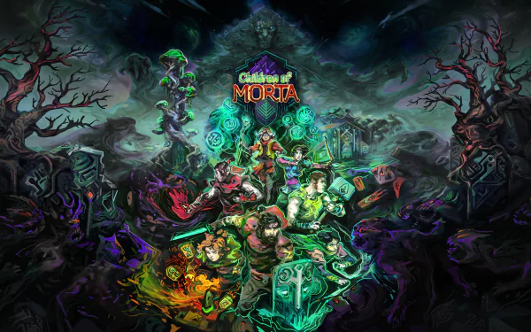
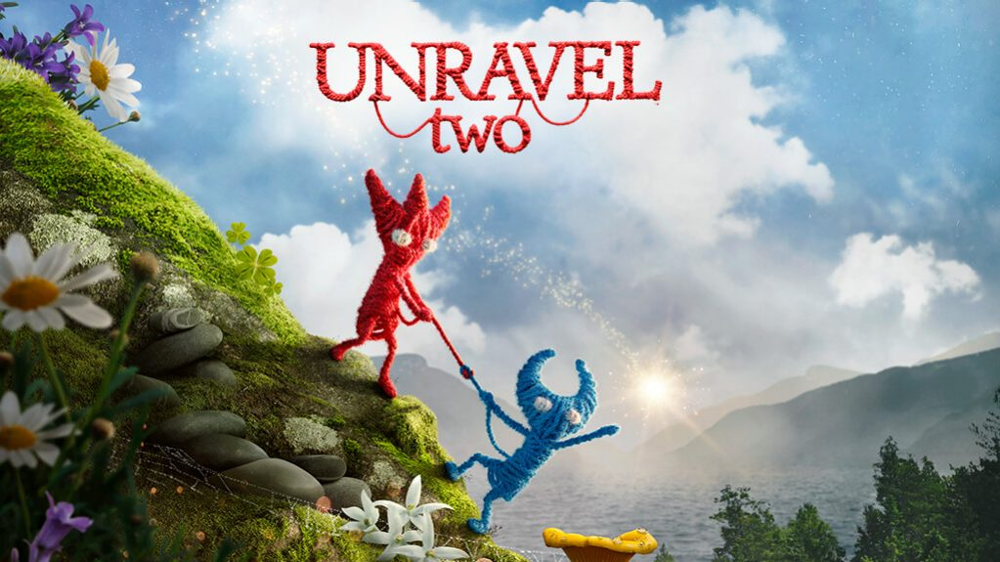

Local Couch Co-Op
Home Games AboutGames
-

Embark on the craziest journey of your life in It Takes Two, a genre-bending platform adventure created purely for co-op. Invite a friend to join for free with Friend's Pass and work together across a huge variety of gleefully disruptive gameplay challenges. Play as the clashing couple Cody and May, two humans turned into dolls by a magic spell. Together, trapped in a fantastical world where the unpredictable hides around every corner, they are reluctantly challenged with saving their fractured relationship.
-

Inspired by SWAT 4 and gritty police TV shows, Police Stories is a fresh take on top-down shooters with an emphasis on tactics that forces you to make split second decisions. Neutralize criminals, rescue civilians and defuse bombs in Single Player mode or Online Co-op. And remember - shooting first is not an option!
-

Road Redemption is an action racing game where you lead your motorcycle gang on an epic journey across the country in a brutal driving combat adventure.Earn money by completing races, assassinations, robberies, and other challenges in your path. As you collect loot, you'll upgrade your character, your bike, and your weapons.
-

Cuphead is a classic run and gun action game heavily focused on boss battles. Inspired by cartoons of the 1930s, the visuals and audio are painstakingly created with the same techniques of the era, i.e. traditional hand drawn cel animation, watercolor backgrounds, and original jazz recordings.
-

What begins as a thrilling breakout quickly turns into an unpredictable, emotional adventure unlike anything seen or played before. A Way Out is an experience that must be played with two players. Each player controls one of the main characters, Leo and Vincent, in a reluctant alliance to break out of prison and gain their freedom.
-

Children of Morta is an action RPG with a rogue-lite approach to character development, where you don’t play a single character - but a whole, extraordinary family of heroes. Hack’n’slash through hordes of enemies in procedurally generated dungeons, caves and lands and lead the family of Bergsons, with all their flaws and virtues, against the forthcoming Corruption.
-

When you cut ties to the past, new bonds form. In Unravel Two, create a Yarny of your very own. Then build relationships with other Yarnys in local co-op or as a single player, fostering friendship and support as you journey together. Begin your adventure in a cold and imposing land, then watch your surroundings blossom with new life as you chase the spark of adventure. Dive into an immersive story filled with energy, exuberance, inspiration — even monsters. Approach every challenge with positivity and fearlessness to awaken the world around you, and discover an unbreakable bond between friends.